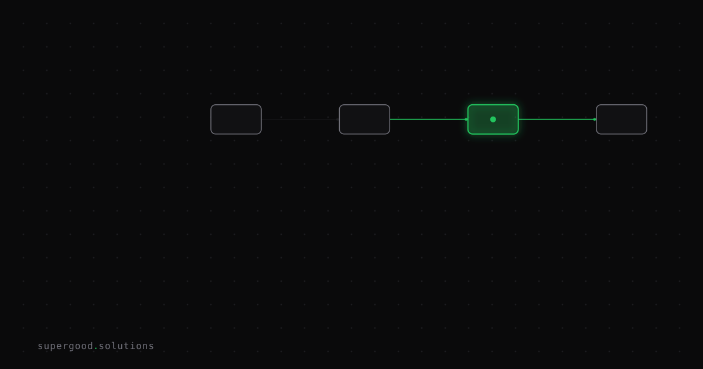

Unsandboxed Agents Are a File Deletion Incident Waiting to Happen
TL;DR: When a coding agent wipes your production database or nukes a directory, that's not a model alignment failure — it's an ops decision you made when you gave an LLM shell access without a sandbox. The blast radius belongs to whoever made that call.
Key Insight
Every enterprise post-mortem I've seen blaming "the AI deleted our files" is actually describing a deployment architecture mistake.
Here's the uncomfortable framing from Solomon Hykes, co-founder of Docker: "An AI agent is an LLM wrecking its environment in a loop." Simon Willison quotes him approvingly in his piece on designing agentic loops, and the point is sharp: agents are designed to act on the environment. Giving one production filesystem access and then being surprised when it deletes something is like giving an intern root access and blaming the intern when rm -rf happens.
The model isn't malfunctioning. Your deployment is.
Why Teams Miss This
Teams reach for YOLO mode — auto-approve everything, no human checkpoints — because it's effective. Willison is direct: constant approval prompts "dramatically reduce effectiveness at solving problems through brute force." So engineers disable them. Understandable. But the next move matters enormously.
Most teams skip straight to "take a risk and hope we catch mistakes before they cause damage." That's option 3 out of three, and Willison says most people choose it. In a dev environment with a throwaway repo, this is a totally reasonable bet. In production, it's an incident report you haven't filed yet.
The three real threat surfaces are:
- Destructive shell commands — bad path assumptions +
rm,DROP TABLE, or a misconfigured migration script - Exfiltration — an agent with access to environment variables and network egress is a credential leak waiting on the right malicious instruction in context
- Proxy abuse — your infrastructure used as a launchpad for other attacks
None of these require the model to "go rogue." All of them require only that the agent gets an ambiguous instruction, a malformed context, or a prompt injection somewhere in its tool call chain.
How to Actually Do It
Three patterns that work in production:
1. Sandbox first, YOLO inside the sandbox
Containers are the obvious answer. Docker, GitHub Codespaces, or Apple's container tool give you a disposable environment where an agent can operate freely. Container escapes exist but are rare enough for most enterprise threat models. The win: your agent gets full autonomy, your production filesystem is never in scope.
For code execution specifically, Simon Willison's micropython-wasm approach — sandboxing Python via WASM — is interesting for cases where you need the agent to run code but don't want to spin up a full container.
2. Scope credentials to the minimum viable blast radius
Before any agent gets credentials, ask: what's the worst case if these credentials are used adversarially? If the answer is "production data loss," scope them down. Read-only DB creds for analysis tasks. Scoped IAM roles for infrastructure tasks. The agent does not need write access to things it won't write to.
# Bad: agent gets your full AWS profile
AWS_PROFILE=default claude-code "optimize our S3 bucket structure"
# Better: agent gets a scoped role with only what it needs
AWS_ROLE_ARN=arn:aws:iam::123456789:role/s3-read-only claude-code "audit our S3 bucket structure"3. Build a kill switch into the loop
Agentic loops need interruption points. For any task that touches production state, add a confirmation step before the destructive action. This doesn't have to be a human — it can be a cheap validation layer that checks "does this operation match the stated goal?" before executing. The goal is to add one second of friction before an irreversible action, which is usually enough to catch the obvious mistakes.
What We've Learned
The teams that have had agents in production for 12+ months aren't the ones with the most sophisticated models. They're the ones who treated "what can this agent touch?" as a first-class architecture decision, not an afterthought.
The experiment worth running this week: map every tool in your agent's loop against a two-column table — what it can read vs. what it can write or delete. If the write/delete column includes anything you'd be paged for at 2 AM, that's the thing to sandbox before your next incident.
Model capability is not the bottleneck here. Deployment architecture is.
Sources
- Designing agentic loops — Simon Willison
- Running Python code in a sandbox with MicroPython and WASM — Simon Willison
- Sprites.dev: stateful sandbox environments for coding agents — Simon Willison
- GitHub Codespaces — use someone else's computer for YOLO mode
- Apple container tool
Have a specific workflow in mind?
Bring it to a Quick Scan — a live working session where we'll tell you honestly whether it should be an agent, a workflow, or left alone, before you spend a dollar building it. You get 3 prioritized recommendations on the call, a one-page summary after, and the $500 credited toward any engagement within 30 days.
Get new posts + practical agent-ops notes
One email when something new goes up. No nurture sequence, no spam — unsubscribe whenever you want.